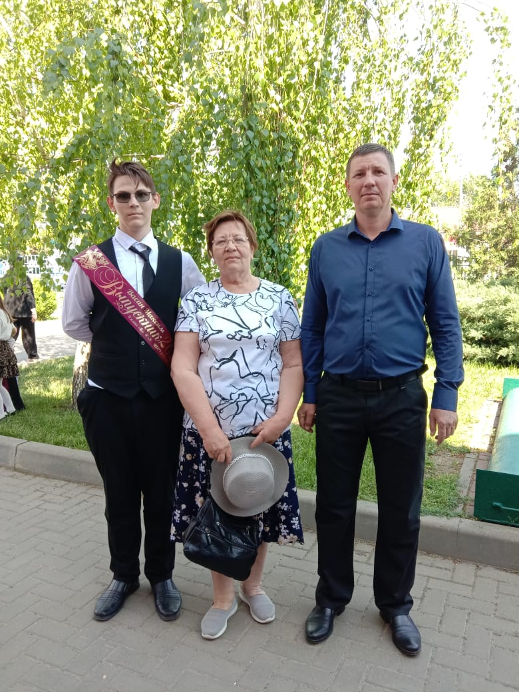
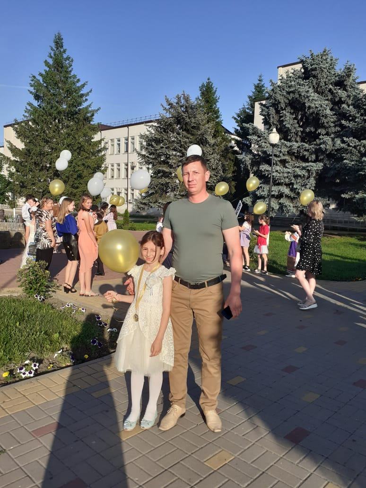
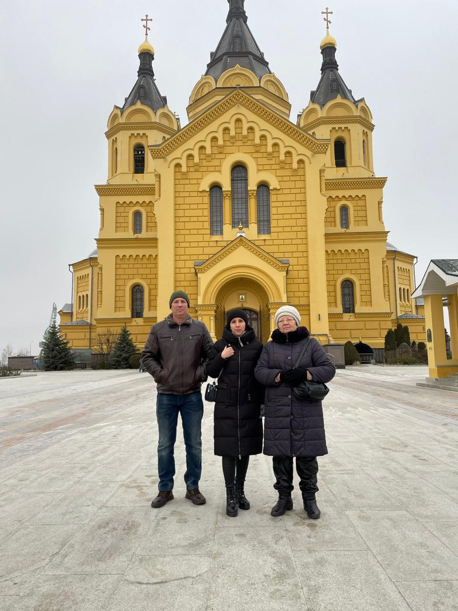

Дмитрий Владимирович Васин (15.12.1981)
Родился: 15.12.1981, Россия
Возраст: 43
Телефон: +7 961 525-06-87
Отец: Владимир Александрович Васин (15.05.1960 - 30.12.2013)
Мать: Татьяна Елизаровна Васина (Юркова) (09.02.?)
Сестра: Ольга Владимировна Сухова (Васина) (25.01.1988)
Брат: Валентин Владимирович Васин (25.01.1988)
Бывшая жена: Елена Викторовна Васина (Пасюк) (14.05.1985)
Сын: Максим Дмитриевич Васин (22.12.2007)
Дочь: Анастасия Дмитриевна (Васина) (18.02.2012)
 Свадьба: 30.06.2007, Крыловская. Свадьба Дмитрия Владимировича Васина и Елены Викторовны Пасюк(после- Васиной). Свадьба: 30.06.2007, Крыловская. Свадьба Дмитрия Владимировича Васина и Елены Викторовны Пасюк(после- Васиной).  На др Дениса: 02.03.2022. На др Дениса: 02.03.2022. Последний звонок: 24.05.2025. Последний звонок Максима после 11 классов учёбы. Возле Фонтана в Крыловской. |
: до 01.10.2025. |